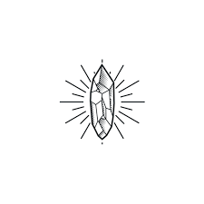

ArTISTA
Heal through art
Who are we?
We believe that all of us can make a difference in the world. Our means is spreading kindness and healing through art. We are a group of artists that make art that is intented to raise your vibration. All our art is inspired by the various healing crystals. Crystal healing is a pseudoscientific alternative medicine technique that uses semiprecious stones and crystals such as quartz and opals. The art is created to cause the same healing effect. Purchase yours today.

Use amethyst to boost the sympathetic nervous system, balance hormones, relieve headaches, ease neck tension, and treating insomnia. Place amethyst under your pillow at night to sleep deeply and wake rested, ready to create and manifest.
Known to improve mental function by improving clarity of thought, agate is a wonderful stone to use before an important test, when writing, or when gathering thoughts for a meaningful conversation with someone you love and wish to communicate clearly with.
Aventurine is supportive of the heart, blood, and energy circulation, and can help speed up recovery time from an injury, illness, or surgery.

Citrine is known to stimulate the metabolism, and aid in digestion and nausea. It can also be used to strengthen nerve impulses, helping the brain fire more rapidly and sharply.

Use tourmaline to ease pain in the joints and to assist in realigning the spine. It can also be used to strengthen the immune system, heart and adrenal glands – easing stress and releasing tension.

Use this powerful stone to support and help heal the throat, larynx, and vocal cords. Due to its strong ties to the brain, it is believed to ease Attention Deficit Disorder (ADD) by helping the mind to focus and let go of unnecessary thoughts.
The iron found in hematite can help us cleanse the blood, improve circulation, manage an irregular menstrual flow, and support a healthy heart. It can also be used to alleviate stress and anxiety, and calm the nervous system.

With its association to the heart, Jade is good for filtering toxins and cleansing the body as a whole through the blood. It can also be used to ease joint pain and speed up the healing process after a surgery.
Kyanite is wonderful to help heal any pain in the throat and improve communication. It can also be used to ease headaches, eye pain from looking at a computer, and tension at the brow.